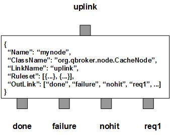

CacheNode picks up JMS messages as the requests and looks for cached responses according to their content and predefined rulesets. If a valid cache is available, its content will be loaded to the incoming message before it is routed to the done outlink. If there is no cache or the cache has expired, the incoming message will be routed to the right outlink as the request. Once the response is back, CacheNode will evaluate the return code and cache the response if it is a success. Then the message will be routed to the done outlink. In case of failure, the incoming messages will be routed to the failure outlink. If none of the rulesets matches the incoming messages, they will be put to the nohit outlink. Therefore, there are three fixed outlinks, done, failure and nohit. They are also called the final exits since all the incoming messages have to exit through one of them at the end. The rest of the outlinks are collectibles to fulfill requests.
CacheNode contains a number of predefined rulesets. These rulesets categorize messages into non-overlapping groups via the property filter. Therefore, each ruleset defines a unique message group. If the associated outlink is none of the final exits and KeyTemplate is also defined in a ruleset, it is a ruleset of dynamic cache. That outlink is a collectible used to fulfill requests for caching. In a dynamic cache ruleset, other cache parameters may be defined as well, such as TimeToLive, RequestType, DataField, Template and Substitution, etc. TimeToLive controls how long to cache the result. DataField, Template and Substitution are used to modify the request for cache. By default, the request is assumed already built-in. If the associated outlink is one the final exits and KeyTemplate is defined also, the ruleset is of static cache. In this case, StaticCache is required to be defined in the ruleset. It is a map with predefined key-value pairs. Each cache ruleset maintains its own dedicated cache. Hence, different message groups may have their own ways for the keys and policies. Further more, CacheNode always creates an extra ruleset, nohit. Ruleset of nohit is for all the messages not hitting any of the predefined rulesets. For a cache ruleset, the number of collected responses is stored in RULE_PEND. So it is easy to track the hit ratio of the cache.
CacheNode also supports the invalidation rulesets. The invalidation ruleset is simliar to the cache ruleset. The only difference is that the former has also defined TargetRule. TargetRule specifies the name of a cache ruleset for invaliadations. Its KeyTemplate is used to generate group keys for invalidations. Each message of an invalidation ruleset will be routed to the outlink directly. Once the response is successfullycollected, CacheNode will invalidate the cache of the target ruleset based on the group keys. Currently, only the request type of JDBC is fully supported.
If a ruleset has its preferred outlink to one of the collectibles but has no KeyTemplate defined, it is a simple rule to collect responses. For this rule, CacheNode just routs the requests to the outlink and collects the responses. There is no caching involved with this type of rules.
CacheNode maintains a dedicated cache for each of the cache rules. But it is assumed that the caching keys are unique across all caches. If you run into key conflict with CacheNode, please use a different instance of CacheNode.
CacheNode has two properties to control timing. They are Heartbeat in sec and SessionTimeout in sec. Heartbeat is the frequncy to run the sanity check on pending requests. By default, it is 120 sec. SessionTimeout controls the caching time for the templates of JDBC queries. By default, it is 3600 sec.
You are free to choose any names for the three fixed outlinks. But CacheNode always assumes the first outlink for done, the second for failure and the third for nohit. The rest of the outlinks are collectibles for responses. It is OK for those three fixed outlinks to share the same name. Please make sure each of the fixed outlinks has the actual capacity no less than that of the input XQueue.
Apart from the common properties, there are some implementation specific properties for CacheNode.
| Property Name | Data Type | Requirement | Description | Examples |
|---|---|---|---|---|
| Heartbeat | integer | optional | frequency in second to run a sanity check on pending requests | 300 (default: 120) |
| SessionTimeout | integer | optional | timeout in second for a session | 300 (default: 3600) |
| MaxGroup | integer | optional | max number of cached groups | 1024 (default: 1024) |
| RCField | string | optional | name of the field to store the return code | (default: ReturnCode) |
The cache operation is executed via the pre-defined rulesets. Therefore, the configuration of the rulesets is critical to the operations of CacheNode. Here are complete properties of rulesets for CacheNode.
| Property Name | Data Type | Requirement | Description | Examples |
|---|---|---|---|---|
| Name | alphanumeric with no spaces | mandatory | name of the ruleset | event |
| PreferredOutLink | alphanumeric with no spaces | mandatory | name of the preferred outlink | query |
| RequestType | string | optional | type of the requests for dynamic caching | jdbc |
| FieldName | string | optional | name of the property to be formatted as the request | url |
| Template | string | optional | template to build the request | http://##hostname## |
| Substitution | string | optional | text subsctitution on the request | s/^0// |
| TimeToLive | integer | optional | seconds to expire the cache items | |
| TargetRule | string | optional | name of the target ruleset | |
| KeyTemplate | string | optional | template for the cache key | ##Count## |
| KeySubstitution | string | optional | text subsctitution for the cache key | s/^0// |
| RCRequired | boolean | optional | ReturnCode is required or not | false (default: true) |
| StaticCache | map | optional | static cache containing key-value pairs | see example |
| JMSPropertyGroup | list | optional | list of pattern groups on properties to select messages | see example |
| XJMSPropertyGroup | list | optional | list of pattern groups on properties to exclude messages | see example |
| PatternGroup | list | optional | list of pattern groups on body to select messages | see example |
| XPatternGroup | list | optional | list of pattern groups on body to exclude messages | see example |
| StringProperty | map | optional | for setting message properties on its final exit | see example |
{
..
"Ruleset": [{
"Name": "bypass",
"PreferredOutLink": "done",
"JMSPropertyGroup": [{
"JMSType": "^score$"
}]
}],
...
}
where it sends the messages to the outlink of done without processing them.
Here is an example of CacheNode:
{
"Name": "node_cache",
"ClassName": "org.qbroker.node.CacheNode",
"Description": "cache events",
"Operation": "cache",
"LinkName": "cache",
"Capacity": "32",
"DisplayMask": "0",
"XAMode": "1",
"Debug": "31",
"Ruleset": [{
"Name": "query",
"PreferredOutLink": "auth",
"RequestType": "jdbc",
"JMSPropertyGroup": [{
"operation": "."
}],
"PatternGroup": [{
"Pattern": ["^SELECT "]
}],
"TimeToLive": "1800",
"KeyTemplate": "##body##"
},{
"Name": "update",
"PreferredOutLink": "auth",
"RequestType": "jdbc",
"TargetRule": "query",
"JMSPropertyGroup": [{
"operation": ".",
"SQL": "^(INSERT|UPDATE|DELETE) "
}],
"KeyTemplate": "##SQL##"
},{
"Name": "static",
"PreferredOutLink": "done",
"JMSPropertyGroup": [{
"pubURI": "."
}],
"KeyTemplate": "##pubURI##",
"StaticCache": {
"fluit-1": "apple",
"fluit-2": "orange",
"fluit-3": "grape",
"fluit-4": "kiwi"
}
}],
"OutLink": [
{
"Name": "done",
"Capacity": "48",
"Partition": "40,8"
},{
"Name": "failure",
"Capacity": "48",
"Partition": "36,4"
},{
"Name": "nohit",
"Capacity": "32",
"Partition": "0,4"
},
"auth"
]
}
where there are two rulesets, one for cache and the other for invalidation.